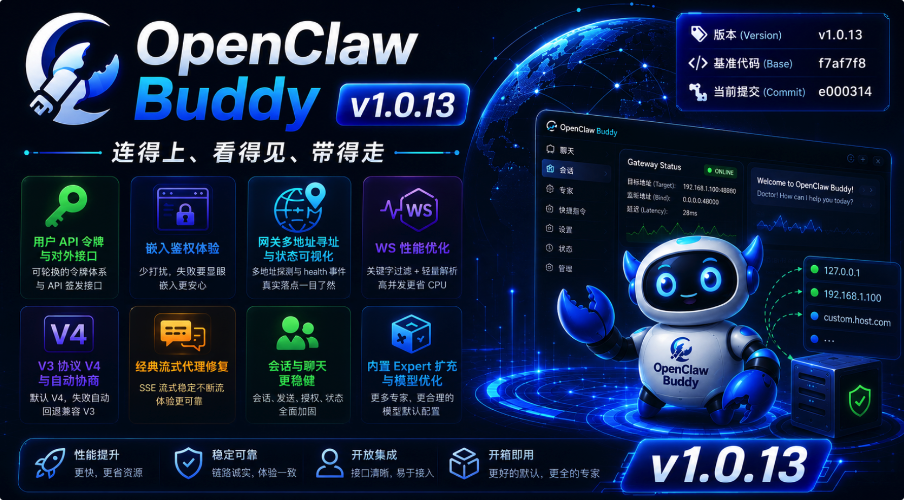

“网关不在本机时，最怕的是『以为在线』；嵌入到别人的页面里，最怕的是『一声不响地失败』。
这一版里，我们把寻址、探针与状态对账拧成一股绳：bind 与自定义 Host 能被读懂，多地址探测与 health 事件把真实落点告诉前端；WebSocket 代理在洪流里学会『只对关键字动刀』，CPU 不再被 JSON 淹没。
与此同时，系统用户有了可轮换的 API 令牌与对外签发接口，Bot 授权与建号拆成清晰的两步；V3 侧协议抬到 V4，却在握手失败时悄悄退回兼容路径；经典模式的流式代理补上了早该在的 defer——空 SSE 不再是玄学。
五月过半，我们把『链路诚实』写进默认路径。”
🔖 版本 (Version): v1.0.13
📅 发布日期 (Date): 2026-05-16
🆔 基准代码 (Base): f7af7f8
🆔 当前提交 (Commit): e000314
💠 核心主题: 用户 API 令牌与对外签发、嵌入鉴权体验、网关多地址寻址与 WS 性能、V3 协议 V4 与协商、经典流式代理修复、会话列表与会话操作稳健性。
users.api_token；中间件与 /login 识别 buddyu_ 前缀令牌；管理端支持生成、复制、重置与登录链接。POST /v1/getUserToken（adminToken 校验，按用户名返回 token 与 bot_ids）；POST /v1/createUserToken（不存在则创建 user 角色并签发；支持姓名等字段）；POST /v1/assignUserBot 独立承担 Bot 绑定，与建号解耦。API.md 同步鉴权说明、curl 示例与字段表。💡 大白话：给集成方一把『可轮换的钥匙』，谁在哪个 Bot 上有权限，接口层能说清楚、改得动。
?embed=true 时不再弹出「自动登录成功」顶栏 message，避免宿主页面噪音。💡 大白话：嵌进去时，成功别嚷嚷，失败别把人领到登录页兜圈子。
openclaw.json 的 bind、customBindHost，并向前兼容 Buddy 的 host；候选地址按 127.0.0.1 → 自定义 Host 降级探测。target / port）；端口为 0 或未配置时回落 HEALTH_PORT，与 HTTP / WS 代理行为对齐。internal/process 寻址逻辑统一，Guardian 与状态接口一致。gateway.status 为前提；Dashboard 状态与 deriveGatewayState 统一；Tooltip 结构化展示监听地址与延迟。💡 大白话：网关绑在物理 IP 上时少误报「已停止」；状态栏告诉你『连的是谁、延迟多少』，而不是一个笼统的绿点。
tests/manual 下 Go 调试脚本与协议手册同步 V4 / 签名说明。💡 大白话：新网关用 V4，老环境还能自动聊回去，不必手工改两处配置。
SYS 斜角丝带（深浅主题）；i18n 补全。💡 大白话：空态更好看、更好管，手机上也不会一排卡片把页面撑爆。
customer_success、data_analyst、meeting_facilitator、product_manager、prompt_coach、ux_researcher 等；修正 live_stream_coach 字段；新增打包校验测试保证必填字段完整。maxTokens 默认调整为 50k；Bots 配置写入时移除冗余 capabilities 别名，统一走 input 描述。💡 大白话：开箱专家更全，默认模型参数不那么『夸张到用不上』。
1. 经典模式 HTTP 流式代理 🔧
cancel context，避免 SSE 被截断为空流。Port <= 0 时与 WS 一致回落 HEALTH_PORT。Writer + Flusher、复用缓冲区，降低延迟与 GC。2. V3 聊天与会话 🧩
sessions.create 兼容无 payload.key；快捷建会话失败不误清 sessionKey；模型 / 思考等级 patch 失败回滚并提示。session.message 兜底误释放输入锁。NOT_PAIRED 路径恢复；发送顺序优化；标题清洗过滤冗余前缀；Bot 选中同步增加可用性校验。useV3Sessions 中 fetchSessions 依赖补全，修复切换用户后会话列表过滤不更新。3. 后端与工程结构 🏗️
handlers.go 按领域拆分为微信 / 自愈 / 设备 / 状态 / 配置 / 安全 / 用量等文件。openclaw.json 读写集中到 config_json.go；OpenClaw 实现拆为多文件（openclaw_*.go），openclaw.go 保留类型入口。useV3Messages 拆为工具与格式化模块；App 抽离 gatewayState、menu、GlobalLoadingMask、NoBotPermissionOverlay 等。localStorage 缓存首屏秒开；移除列表收到后的冗余 N² 遍历。.agent / .cursor；清理旧版 Skill 定义。.cursorignore、.geminiignore；专家文案去个性化为通用「用户」称谓。
下列为 f7af7f8..e000314 区间内 非 merge 提交（时间新 → 旧）。合并节点参见 GitHub PR #35–#38 等。
| 简写 | 描述 |
|---|---|
| e000314 | fix(http): 修复经典模式流式代理三处 Bug |
| 7fa5782 | fix(v3): 优化 WebSocket 发送顺序并修复 fetchSessions 闭包 Bug |
| 39d7707 | fix(v3): 修复 WebSocket 静默授权 Bug、增强标题清洗并优化状态同步 |
| 8ec2e29 | refactor(opsx): 清理旧版 Skill 定义以完成流程简化 |
| f1ab6c2 | refactor(opsx): 简化 OpenSpec 流程，整合核心 Skill 并同步至 .agent 与 .cursor 目录 |
| b44ef44 | perf(bots): 优化模型默认配置，将 maxTokens 默认值调整为 50k |
| 88fa52d | feat(v3): 升级 WebSocket 协议至 V4 并实现版本自动协商兼容 |
| 7e8141a | fix(ws): 修复网关 WebSocket 代理端口为 0 的问题并增加兜底逻辑 |
| c9c2886 | perf: 优化自动标题总结频率并调整模型默认上下文限制 |
| f5a4919 | perf(web): 优化会话列表加载逻辑实现「秒开」 |
| d28e89e | perf(network): 优化 WebSocket 代理性能并加固多地址状态探测 |
| da47e79 | chore: 添加 .cursorignore 和 .geminiignore 配置文件 |
| 164a0fe | feat(network): 优化网关代理寻址机制并增强前端状态展示 |
| 2d4d11a | fix(web): 优化网关状态同步与 WebSocket 重连逻辑 |
| 2623824 | fix(v3): 思考占位时不再因 session.message 兜底误释放输入锁 |
| 0165229 | fix(v3): 折叠元数据区块展开状态持久化 |
| 655893e | feat(api): assignUserBot 与 createUserToken 拆分 |
| 314785d | feat(api): createUserToken 支持姓名与可选 Bot 授权 |
| 246e8de | fix(chat): V3 会话键与快捷聊天容错及发送/设置防护 |
| 0b53cd3 | refactor(web): 抽离 App 网关状态、菜单与全局遮罩 |
| 9f3a9db | feat(api): 对外 createUserToken 接口 |
| 05b038d | feat(web): embed 令牌失败遮罩与用户表列宽 |
| d7a7a38 | docs: 更新 API.md 鉴权与 getUserToken |
| edf2caa | refactor(api): getUserToken 迁至 /v1 |
| 98f3a18 | feat(api): 对外 getUserToken 接口 |
| e9db313 | feat(users): 用户访问令牌与 URL 认证支持 |
| ec1d28d | feat(process): 扩充内置 Expert 与打包校验测试 |
| 13214f1 | refactor(v3): 拆分 useV3Messages 为工具与格式化模块 |
| 70a647d | refactor(process): 拆分 OpenClaw 实现为多文件模块 |
| f6aa0ed | refactor(process): 抽离 openclaw.json 读写与统一更新 |
| 463bbaf | feat(web): 快捷指令管理折叠提示与系统 SYS 斜角丝带 |
| d4ebe3a | feat(web): 经典聊天欢迎页美化与快捷指令管理优化 |
| 157bbd0 | chore(experts): 去个性化，专家配置改用通用「用户」称谓 |
| 0a60d95 | refactor(api): 继续按领域拆分 handlers.go（设备/状态/配置/安全/用量） |
| 0da1bda | refactor(api): 拆分微信与自愈 handlers 到独立文件 |
| 271b1f0 | fix(chat): 经典模式欢迎页快捷卡片窄屏布局适配 |
| 5944df5 | fix(web): 嵌入模式下静音自动登录成功提示 |
| 3ec93ab | fix(bots): 模型配置移除 capabilities 别名 |